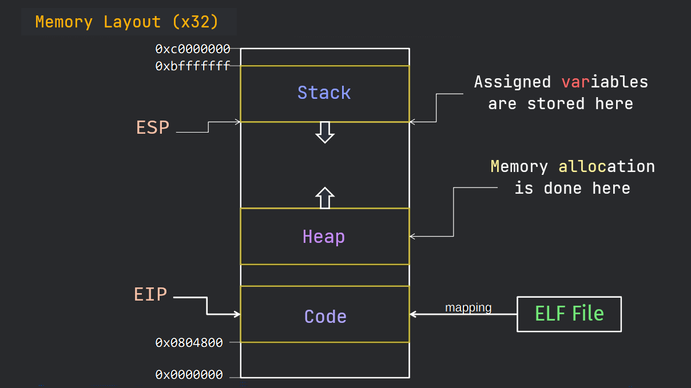

! We will not be diving deep into things but only as much as necessary. For further learning, I’ll link relevant resources.
0.1 Prerequisites
- Basic Computer Science knowledge
- Fundamental knowledge of C - here is a nice tutorial
- Curiosity - Consistency
Optional
- Since, at first, we will be doing exploit development on Linux, it would be nice to learn the necessary things here
- Some Assembly knowledge will benefit you a lot - here is a nice tutorial
- Gdb is going to play a key role in our exploit dev - here’s a lovely tutorial
0.2 Memory Structure
High-level overview

- More here
0.3 Architectures Comparison
Here’s a C program:
#include <stdio.h>
void print_user_data(char* arg1, char* arg2, char* arg3){
printf("Here is Your data\n");
printf("Name: %s Age: %s Job: %s\n", arg1, arg2, arg3);
}
void main(int argc, char **argv){
if (argc!=4) {
printf("Please provide 3 inputs\n");
}
else {
print_user_data(argv[1], argv[2], argv[3]);
}
}
The program takes some command line arguments from the user, checks if they are equivalent to 3 and then passes them to another function which prints some data on the console.
After compiling the code
with gcc as:
gcc code.c -o code
or
make code
Here’s what it does:
Simple enough, right?
When we execute a binary, the binary name and the arguments to its function(s) are stored on the stack (in memory). They are accessed differently in different architectures.
After seeing the disassembled binaries of both archs, you will notice that the length of memory addresses changes. But.. wait
How are the command line arguments being parsed in memory?
Let’s compile the code, disassemble it, and see what’s happening under the curtains.
x32
Compile the code with the command: gcc -m32 code.c -o code
Why -m32?
When we're on a 64-bit OS, the -m32 flag tells the compiler (gcc) to compile the code and give us a 32-bit binary. If you are on 32-bit machine, you can skip it.Disassembly
You can just follow along with the tutorial, but if you’re curious how I disassembled the binary, here you go.
There are many a ways/tools to disassemble a binary. Here, I have used gdb in the following way:
gdb code # 'code' is the name of our binary
b main # instructing gdb to break at main function
disassemble main # disassemble the main function
In the case of 32-bit binary, we can see that first, the arguments are being pushed onto the stack and then the call to our function print_user_data is made. They are later popped off the stack before the program exits.
x64
Compile the code with the command: gcc code.c -o code
Disassembly
On the other hand, in the case of 64-bit binary, arguments are first moved into registers and then our function print_user_data is called.
Now that you understand the distinction between the two, it will come in handy later on, as we will be putting 32-bit binaries to test more frequently for simplicity.
0.4 ELF
The last thing to be aware of are the ELF files. Wondering what they are?
ELF files, short for Executable and Linkable Format, are standard executables for Linux and other Unix OSs (not exactly but, think of them as the EXE files on Windows).
And as for our current program, since we compiled it on Linux, it also is an ELF file.
We might discuss ELF files in detail later on. For further study, here’s a nice video .